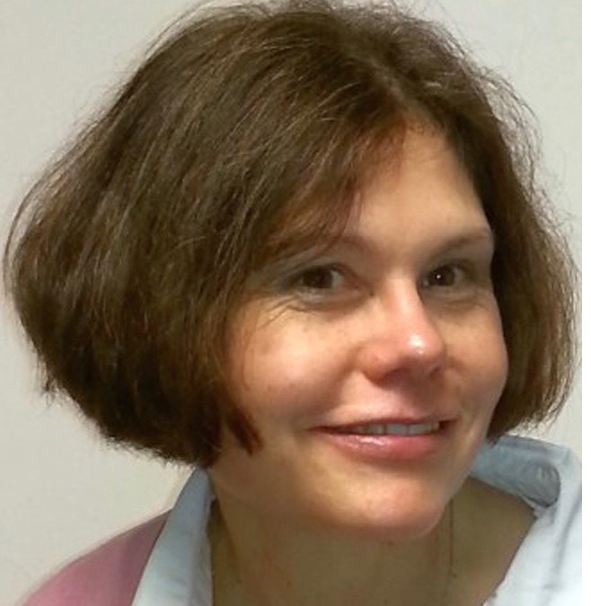

Michaelmas Term 2026

Wednesday 14 October 2026 · 6.00 pm
LectureLost in Translation, or Found in Prayer? Mediaeval Monastic Psalm Collects
Dr Bridget Nichols, Lecturer in Anglicanism and Liturgy, Church of Ireland Theological Institute, Dublin
Bridget is currently working on a large-scale translation and commentary project on mediaeval psalm collects, and will present some of her research at this gathering.
Venue: St Barnabas Church, Oxford
Following the talk there will be drinks in church, and for those who can stay, dinner at the Old Bookbinders pub beside St Barnabas from 7.30 pm. Dinner is £40 per person for three courses and wine, on a first come, first served basis.
Further Events
Further events will be announced in due course. Please check back or join our mailing list via the contact page.